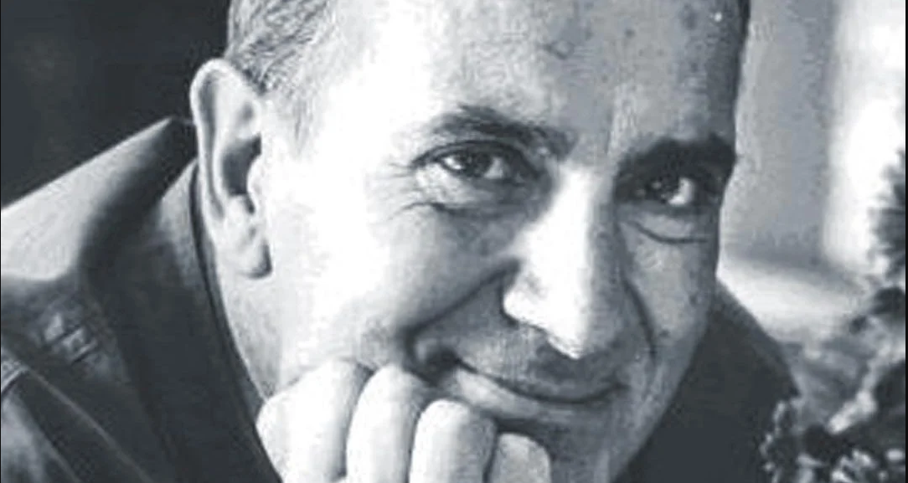

Manuel Puig nació en General Villegas, Argentina el 28 de diciembre de 1932. Murió en Cuernavaca, México, el 22 de julio de 1990. Se convirtió en uno de los autores latinoamericanes mas leídos y traducidos. Un escrutor que cuestiona los estereotipos sociales, sexuales y literarios. En 1973, recibió amenazas de muerte que lo obligaron a abandonar el país. Siempre fue reconocido en el mundo por su escritura desenfadada y comprometida. En 1982 fue nominado al premio Nobel de Literatura, luego que en Estocolma se representara la adaptación teatral de El beso de la mujer araña.
